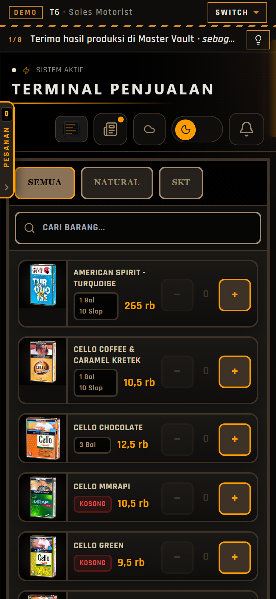
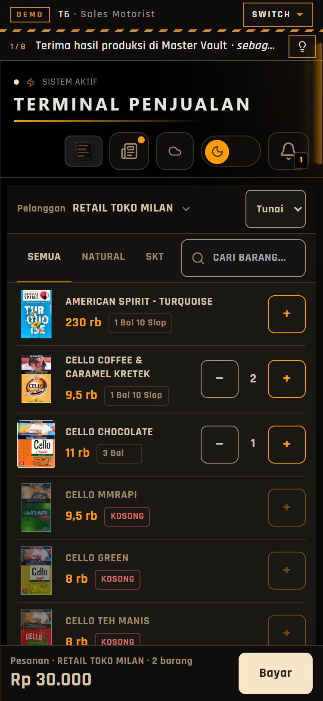
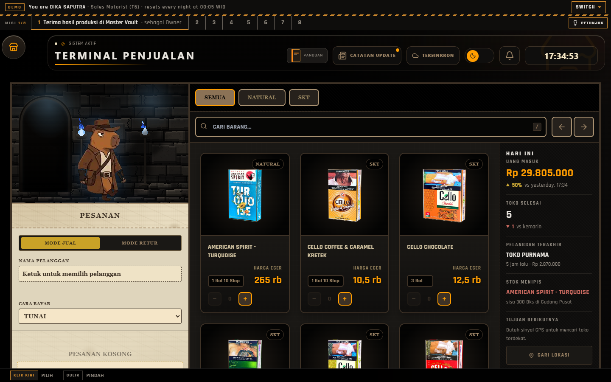
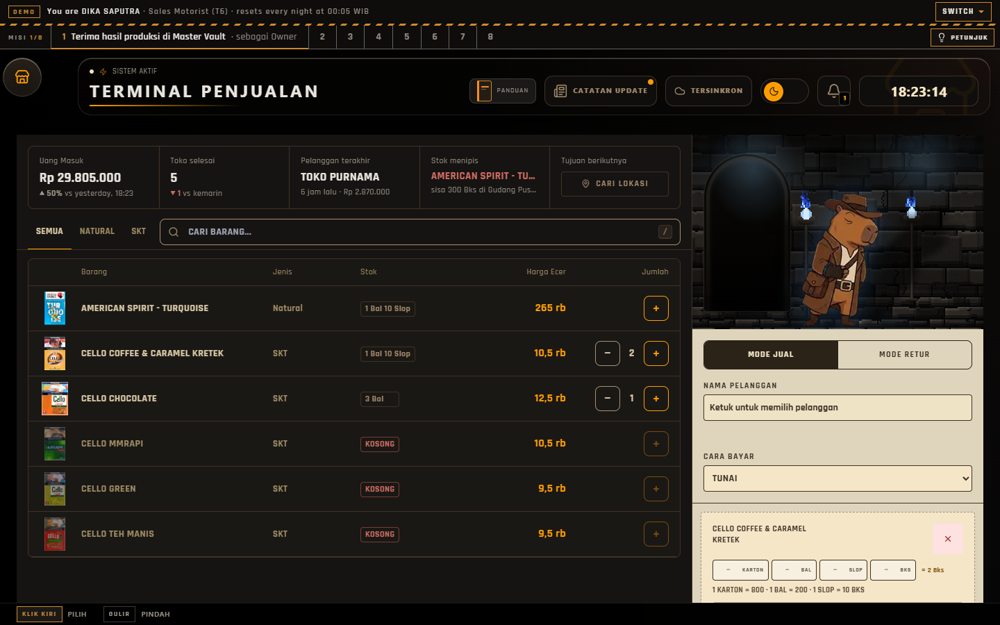
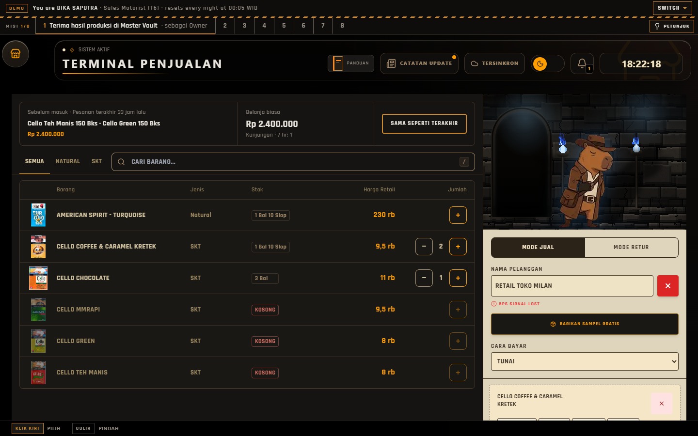
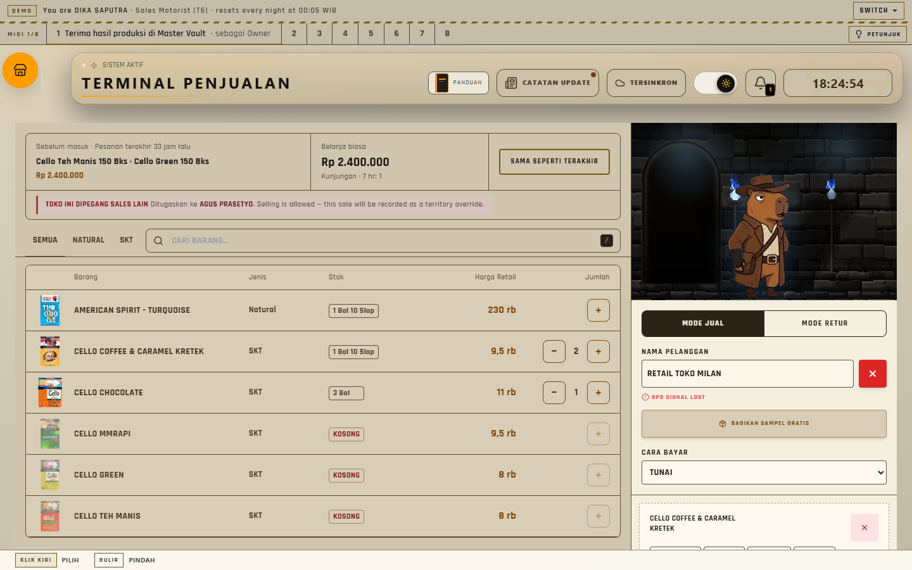

Direction B, the Price list. Real screen, demo salesman, same data. 11 Nov 2026.

1 · Today (phone)Big cards, three letter styles. The total hides behind the PESANAN tab on the left edge.

2 · Built (phone)One ruled line per product. Shop and payment on top. Total and Bayar always at the bottom.3 · Built: after BayarThe order slip slides in, flat cream with dark ink. Photo and save are still here, unchanged.

1 · Today (PC)Order on the left, three big cards per row, the day's numbers in a side column.

2 · Built (PC), no shop chosenA table with columns. The day's numbers in one strip on top. The cream slip on the right, under the capybara's room.

3 · Built (PC), shop chosenThe strip becomes that shop's file: last order, usual basket, "Same as last time", and any warning.

4 · Built (PC), light themeSame screen in the light theme.